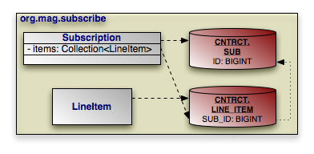

OpenJPA supports many persistence strategies beyond those of the JPA specification. Section 2, “ Additional JPA Metadata ” covered the logical metadata for OpenJPA's additional persistence strategies. We now demonstrate how to map entities using these strategies to the database.
Section 3, “
Object Identity
” describes how to use datastore identity
in JPA. OpenJPA requires a single numeric primary key column to hold datastore
identity values. The
org.apache.openjpa.persistence.jdbc.DataStoreIdColumn
annotation customizes the datastore identity column. This annotation
has the following properties:
String name: Defaults to ID.
int precision
String columnDefinition
boolean insertable
boolean updatable
All properties correspond exactly to the same-named properties on the standard
Column annotation, described in
Section 3, “
Column
”.
Example 7.14. Datastore Identity Mapping
import org.apache.openjpa.persistence.*;
import org.apache.openjpa.persistence.jdbc.*;
@Entity
@Table(name="LOGS")
@DataStoreIdColumn(name="ENTRY")
public class LogEntry {
@Lob
private String content;
...
}
OpenJPA supports version fields as defined by the JPA specification, but allows
you to use a surrogate version column in place of a version field if you like.
You map the surrogate version column with the
org.apache.openjpa.persistence.jdbc.VersionColumn
annotation. You can also use the
org.apache.openjpa.persistence.jdbc.VersionColumns
annotation to declare an array of VersionColumn
values. Each VersionColumn has the following properties:
String name: Defaults to VERSN.
int length
int precision
int scale
String columnDefinition
boolean nullable
boolean insertable
boolean updatable
All properties correspond exactly to the same-named properties on the standard
Column annotation, described in
Section 3, “
Column
”.
By default, OpenJPA assumes that surrogate versioning uses a version number
strategy. You can choose a different strategy with the
VersionStrategy annotation described in
Section 9.1.4, “
Version Strategy
”.
OpenJPA makes it easy to create multi-column
custom mappings. The JPA
specification includes a Column annotation, but is
missing a way to declare multiple columns for a single field. OpenJPA remedies
this with the
org.apache.openjpa.persistence.jdbc.Columns
annotation, which contains an array of Column values.
Remember to annotate custom field types with Persistent,
as described in Section 2.3, “
Persistent Field Values
”.
Section 8.4, “
Direct Relations
” in the JPA Overview introduced
you to the JoinColumn annotation. A
JoinColumn's referencedColumnName property
declares which column in the table of the related type this join column links
to. Suppose, however, that the related type is unmapped, or that it is part of a
table-per-class inheritance hierarchy. Each subclass that might be assigned to
the field could reside in a different table, and could use entirely different
names for its primary key columns. It becomes impossible to supply a single
referencedColumnName that works for all subclasses.
OpenJPA rectifies this by allowing you to declare which attribute
in the related type each join column links to, rather than which
column. If the attribute is mapped differently in various subclass tables,
OpenJPA automatically forms the proper join for the subclass record at hand. The
org.apache.openjpa.persistence.jdbc.XJoinColumn
annotation has all the same properties as the standard JoinColumn
annotation, but adds an additional
referencedAttributeName property for this purpose. Simply use a
XJoinColumn in place of a JoinColumn
whenever you need to access this added functionality.
For compound keys, use the
org.apache.openjpa.persistence.jdbc.XJoinColumns
annotation. The value of this annotation is an array of individual
XJoinColumns.
JPA uses the AttributeOverride annotation to override the
default mappings of an embeddable class. The JPA Overview details this process
in Section 8.3, “
Embedded Mapping
”.
AttributeOverrides suffice for simple mappings, but do not allow
you to override complex mappings. Also, JPA has no way to differentitate between
a null embedded object and one with default values for all of its fields.
OpenJPA overcomes these shortcomings with the
org.apache.openjpa.persistence.jdbc.EmbeddedMapping
annotation. This annotation has the following properties:
String nullIndicatorColumnName: If the named column's value
is NULL, then the embedded object is assumed to be null. If
the named column has a non- NULL value, then the embedded
object will get loaded and populated with data from the other embedded fields.
This property is entirely optional. By default, OpenJPA always assumes the
embedded object is non-null, just as in standard JPA mapping.
If the column you name does not belong to any fields of the embedded object,
OpenJPA will create a synthetic null-indicator column with this name. In fact,
you can specify a value of true to simply indicate that you
want a synthetic null-indicator column, without having to come up with a name
for it. A value of false signals that you explicitly do not
want a null-indicator column created for this mapping (in case you have
configured your mapping defaults
to create one by default).
String nullIndicatorFieldName: Rather than name a null
indicator column, you can name a field of the embedded type. OpenJPA will use
the column of this field as the null-indicator column.
MappingOverride[] overrides: This array allows you to
override any mapping of the embedded object.
The EmbeddedMapping's overrides array
serves the same purpose as standard JPA's AttributeOverride
s and AssociationOverride s. In fact, you can
also use the MappingOverride annotation on an entity
class to override a complex mapping of its mapped superclass, just as you can
with AttributeOverride and
AssociationOverride s. The MappingOverrides
annotation, whose value is an array of MappingOverride s,
allows you to overide multiple mapped superclass mappings.
Each
org.apache.openjpa.persistence.jdbc.MappingOverride
annotation has the following properties:
String name: The name of the field that is being overridden.
Column[] columns: Columns for the new field mapping.
XJoinColumn[] joinColumns: Join columns for the new field
mapping, if it is a relation field.
ContainerTable containerTable: Table for the new collection
or map field mapping. We cover collection mappings in
Section 7.6, “
Collections
”, and map mappings in
Section 7.8, “
Maps
”.
ElementJoinColumn[] elementJoinColumns: Element join columns
for the new collection or map field mapping. You will see how to use element
join columns in Section 7.6.2, “
Element Join Columns
”.
The following example defines an embeddable PathCoordinate
class with a custom mapping of a java.awt.Point
field to two columns. It then defines an entity which embeds a
PointCoordinate and overrides the default mapping for
the point field. The entity also declares that if the PathCoordinate
's siteName field column is null, it means that
no PathCoordinate is stored in the embedded record; the
owning field will load as null.
Example 7.15. Overriding Complex Mappings
import org.apache.openjpa.persistence.jdbc.*;
@Embeddable
public class PathCoordinate {
private String siteName;
@Persistent
@Strategy("com.xyz.openjpa.PointValueHandler")
private Point point;
...
}
@Entity
public class Path {
@Embedded
@EmbeddedMapping(nullIndicatorFieldName="siteName", overrides={
@MappingOverride(name="siteName", columns=@Column(name="START_SITE")),
@MappingOverride(name="point", columns={
@Column(name="START_X"),
@Column(name="START_Y")
})
})
private PathCoordinate start;
...
}
In Section 2.4, “Persistent Collection Fields”, we explored the
PersistentCollection annotation for persistent collection
fields that aren't a standard OneToMany or
ManyToMany relation. To map these non-standard collections, combine
OpenJPA's ContainerTable annotation with
ElementJoinColumns.
We explore the annotations below.
The
org.apache.openjpa.persistence.jdbc.ContainerTable
annotation describes a database table that holds collection (or map)
elements. This annotation has the following properties:
String name
String catalog
String schema
XJoinColumn[] joinColumns
ForeignKey joinForeignKey
Index joinIndex
The name, catalog, schema
, and joinColumns properties describe the container
table and how it joins to the owning entity's table. These properties correspond
to the same-named properties on the standard JoinTable
annotation, described in Section 8.5, “
Join Table
”
. If left unspecified, the name of the table defaults to the first five
characters of the entity table name, plus an underscore, plus the field name.
The joinForeignKey and joinIndex
properties override default foreign key and index generation for the join
columns. We explore foreign keys and indexes later in this chapter.
You may notice that the container table does not define how to store the collection elements. That is left to separate annotations, which are the subject of the next sections.
Element join columns are equivalent to standard JPA join columns, except that
they represent a join to a collection or map element entity rather than a direct
relation. You represent an element join column with OpenJPA's
org.apache.openjpa.persistence.jdbc.ElementJoinColumn
annotation. To declare a compound join, enclose an array of
ElementJoinColumns in the
org.apache.openjpa.persistence.jdbc.ElementJoinColumns
annotation.
An ElementJoinColumn always resides in a container table,
so it does not have the table property of a standard
JoinColumn. Like XJoinColumns
above, ElementJoinColumns can reference a linked
attribute rather than a static linked column. Otherwise, the
ElementJoinColumn and standard JoinColumn
annotations are equivalent. See Section 8.4, “
Direct Relations
”
in the JPA Overview for a review of the JoinColumn
annotation.
Relational databases do not guarantee that records are returned in insertion
order. If you want to make sure that your collection elements are loaded in the
same order they were in when last stored, you must declare an order column.
OpenJPA's
org.apache.openjpa.persistence.jdbc.OrderColumn
annotation has the following properties:
String name: Defaults to ORDR.
boolean enabled
int precision
String columnDefinition
boolean insertable
boolean updatable
Order columns are always in the container table. You can explicitly turn off
ordering (if you have enabled it by default via your
mapping defaults) by setting
the enabled property to false. All other
properties correspond exactly to the same-named properties on the standard
Column annotation, described in
Section 3, “
Column
”.
The previous section covered the use of ElementJoinColumn
annotations in conjunction with a ContainerTable for
mapping collections to dedicate tables. ElementJoinColumn
s, however, have one additional use: to create a one-sided one-many mapping.
Standard JPA supports OneToMany fields without a
mappedBy inverse, but only by mapping these fields to a
JoinTable (see
Section 8.5, “
Join Table
” in the JPA Overview for
details). Often, you'd like to create a one-many association based on an inverse
foreign key (logical or actual) in the table of the related type.
|  |
Consider the model above. Subscription has a collection
of LineItem s, but LineItem has
no inverse relation to Subscription. To retrieve all of
the LineItem records for a Subscription
, we join the SUB_ID inverse foreign key column
in the LINE_ITEM table to the primary key column of the
SUB table. The example below shows how to represent this
model in mapping annotations. Note that OpenJPA automatically assumes an inverse
foreign key mapping when element join columns are given, but no container or
join table is given.
Example 7.16. One-Sided One-Many Mapping
package org.mag.subscribe;
import org.apache.openjpa.persistence.jdbc.*;
@Entity
@Table(name="LINE_ITEM", schema="CNTRCT")
public class LineItem {
...
}
@Entity
@Table(name="SUB", schema="CNTRCT")
public class Subscription {
@Id private long id;
@OneToMany
@ElementJoinColumn(name="SUB_ID", target="ID")
private Collection<LineItem> items;
...
}
We detailed the ContainerTable annotation in
Section 7.6.1, “
Container Table
”. Custom map mappings may
also use this annotation to represent a map table.
OpenJPA uses index information during schema generation to index the proper columns. OpenJPA uses foreign key and unique constraint information during schema creation to generate the proper database constraints, and also at runtime to order SQL statements to avoid constraint violations while maximizing SQL batch size.
OpenJPA assumes certain columns have indexes or constraints based on your mapping defaults, as detailed in Section 4, “ Mapping Defaults ”. You can override the configured defaults on individual joins, field values, collection elements, map keys, or map values using the annotations presented in the following sections.
The
org.apache.openjpa.persistence.jdbc.Index
annotation represents an index on the columns of a field. It is also used within
the ContainerTable
annotation to index join columns.
To index the columns of a collection element, use the
org.apache.openjpa.persistence.jdbc.ElementIndex
annotation. These annotations have the following properties:
boolean enabled: Set this property to false
to explicitly tell OpenJPA not to index these columns, when OpenJPA
would otherwise do so.
String name: The name of the index. OpenJPA will choose a
name if you do not provide one.
boolean unique: Whether to create a unique index. Defaults
to false.
The
org.apache.openjpa.persistence.jdbc.ForeignKey
annotation represents a foreign key on the columns of a field. It is also used
within the
ContainerTable annotation to set a database foreign key on
join columns. To set a constraint to the columns of a collection element, use
the
org.apache.openjpa.persistence.jdbc.ElementForeignKey
annotation. These annotations have the following properties:
boolean enabled: Set this property to false
to explicitly tell OpenJPA not to set a foreign key on these columns,
when OpenJPA would otherwise do so.
String name: The name of the foreign key. OpenJPA will
choose a name if you do not provide one, or will create an anonymous key.
boolean deferred: Whether to create a deferred key if
supported by the database.
ForeignKeyAction deleteAction: Value from the
org.apache.openjpa.persistence.jdbc.ForeignKeyAction
enum identifying the desired delete action. Defaults to
RESTRICT.
ForeignKeyAction updateAction: Value from the
org.apache.openjpa.persistence.jdbc.ForeignKeyAction
enum identifying the desired update action. Defaults to
RESTRICT.
Keep in mind that OpenJPA uses foreign key information at runtime to avoid constraint violations; it is important, therefore, that your mapping defaults and foreign key annotations combine to accurately reflect your existing database constraints, or that you configure OpenJPA to reflect on your database schema to discover existing foreign keys (see Section 11.2, “ Schema Factory ”).
The
org.apache.openjpa.persistence.jdbc.Unique
annotation represents a unqiue constraint on the columns of a field. It is more
convenient than using the uniqueConstraints property of
standard JPA Table and SecondaryTable
annotations, because you can apply it directly to the constrained
field. The Unique annotation has the following
properties:
boolean enabled: Set this property to false
to explicitly tell OpenJPA not to constrain these columns, when
OpenJPA would otherwise do so.
String name: The name of the constraint. OpenJPA will choose
a name if you do not provide one, or will create an anonymous constraint.
boolean deferred: Whether to create a deferred constraint if
supported by the database.
DB2, Oracle and SQLServer support XML column types and XPath queries and indexes over these columns.OpenJPA supports mapping of an entity property mapped to an XML column.
Annotate the entity property using the XMLValueHandler strategy:
@Persistent
@Strategy("org.apache.openjpa.jdbc.meta.strats.XMLValueHandler")
The default fetch type is EAGER but can be changed to LAZY by using:
@Persistence(fetch=FetchType.LAZY)
The entity property class is required to have
jaxb binding annotations. This is produced when the classes are generated
from an xml schema using the jaxb generator XJC.Ensure that @XmlRootElement
appears in the root class. In some case this annotation needs to be added manually if it is missing.
The jaxb jar files must be on the application classpath (jaxb-api.jar, jaxb-impl.jar, jsr173_1.0_api.jar or equivalent).
EJB Query path expressions can navigate into the mapped class and its subfields to any level.
The path expression is rewritten into an equivalent XPATH expression using SQL XML functions.
The path expression must be single valued.Path expressions over xml mapped classes can only be used in WHERE as an operand to a simple predicate (= <> < > >= <=).
Path expressions over XML mapped fields can not be:
an input to a EJB query scalar function
an operand of BETWEEN, IS NULL, LIKE or IN predicate
used to project out subfields in the SELECT clause
used in the FROM , GROUP BY, HAVING, ORDER BY clauses
XML schema must not contain namespace declarations. The EJB query path expressions can not refer to java fields generated from XML ANY type or XML mixed element types.
The datatype generated by JAXB must be a valid EJB query type to use the property in an EJB query predicate.
Shown below is a sample XML schema myaddress.xsd,
in which the JPA entity Order has <shipAddress> persistent field that maps to an XML column.
Example 7.17. myaddress.xsd
<?xml version="1.0" ?>
<xs:schema xmlns:xs="http://www.w3.org/2001/XMLSchema" >
<xs:complexType name="Address">
<xs:sequence>
<xs:element name="Name" type="xs:string" />
<xs:element name="Street" type="xs:string"
minOccurs="1" maxOccurs="3" />
<xs:element name="City" type="xs:string" />
</xs:sequence>
</xs:complexType>
<xs:complexType name="CAN_Address">
<xs:complexContent>
<xs:extension base="Address">
<xs:sequence>
<xs:element name="Province" type="xs:string" />
<xs:element name="PostalCode" type="xs:string" />
</xs:sequence>
</xs:extension>
</xs:complexContent>
</xs:complexType>
<xs:simpleType name="USPS_ZIP">
<xs:restriction base="xs:integer">
<xs:minInclusive value="01000" />
<xs:maxInclusive value="99999" />
</xs:restriction>
</xs:simpleType>
<xs:complexType name="USA_Address">
<xs:complexContent>
<xs:extension base="Address">
<xs:sequence>
<xs:element name="State" type="xs:string" />
<xs:element name="ZIP" type="USPS_ZIP" />
</xs:sequence>
</xs:extension>
</xs:complexContent>
</xs:complexType>
<xs:element name="MailAddress" type="Address" />
<xs:element name="AddrCAN" type="CAN_Address"
substitutionGroup="MailAddress" />
<xs:element name="AddrUSA" type="USA_Address"
substitutionGroup="MailAddress" />
</xs:schema>
Java classes Address, USAAddress and CANAddress are produced using jaxb XJC generator from myaddress schema.
Example 7.18. Address.Java
...
@XmlRootElement
@XmlAccessorType(XmlAccessType.FIELD)
@XmlType(name = "Address", propOrder = {
"name",
"street",
"city"
})
public class Address {
@XmlElement(name = "Name", required = true)
protected String name;
@XmlElement(name = "Street", required = true)
protected List<String> street;
@XmlElement(name = "City", required = true)
protected String city;
/**
* Getter and Setter methods.
*
*/
...
}
Example 7.19. USAAddress.java
...
@XmlRootElement
@XmlAccessorType(XmlAccessType.FIELD)
@XmlType(name = "USA_Address", propOrder = {
"state",
"zip"
})
public class USAAddress
extends Address
{
@XmlElement(name = "State")
protected String state;
@XmlElement(name = "ZIP")
protected int zip;
/**
* Getter and Setter methods.
*
*/
...
}
Example 7.20. CANAddress.java
...
@XmlRootElement
@XmlAccessorType(XmlAccessType.FIELD)
@XmlType(name = "CAN_Address", propOrder = {
"province",
"postalCode"
})
public class CANAddress
extends Address
{
@XmlElement(name = "Province")
protected String province;
@XmlElement(name = "PostalCode")
protected String postalCode;
/**
* Getter and Setter methods.
*
*/
...
}
Example 7.21. Showing annotated Order entity with XML mapping strategy
@Entity
public class Order {
@Id private into id;
@Persistent
@Strategy ("org.apache.openjpa.jdbc.meta.strats.XMLValueHandler")
private Address shipAddress;
...
}
Example 7.22. Showing creation of Order Entity having shipAddress mapped to XML column
...
myaddress.ObjectFactory addressFactory = new myaddress.ObjectFactory();
Customer c1 = new Customer();
c1.setCid( new Customer.CustomerKey("USA", 1) );
c1.setName("Harry's Auto");
Order o1 = new Order( 850, false, c1);
USAAddress addr1 = addressFactory.createUSAAddress();
addr1.setCity("San Jose");
addr1.setState("CA");
addr1.setZIP(new Integer("95141"));
addr1.getStreet().add("12500 Monterey");
addr1.setName( c1.getName());
o1.setShipAddress(addr1);
em.persist(o1);
...
Example 7.23. Sample EJB Queries for XML Column mapping
. select o from Order o where o.shipAddress.city = "San Jose" or o.shipAddress.city = "San Francisco" (OK) . select o.shipaAddress from Order o (OK) . select o.shipAddress.city from Order o (INVALID) . select o from Order o where o.shipAddress.street = "San Jose" (INVALID multi valued)